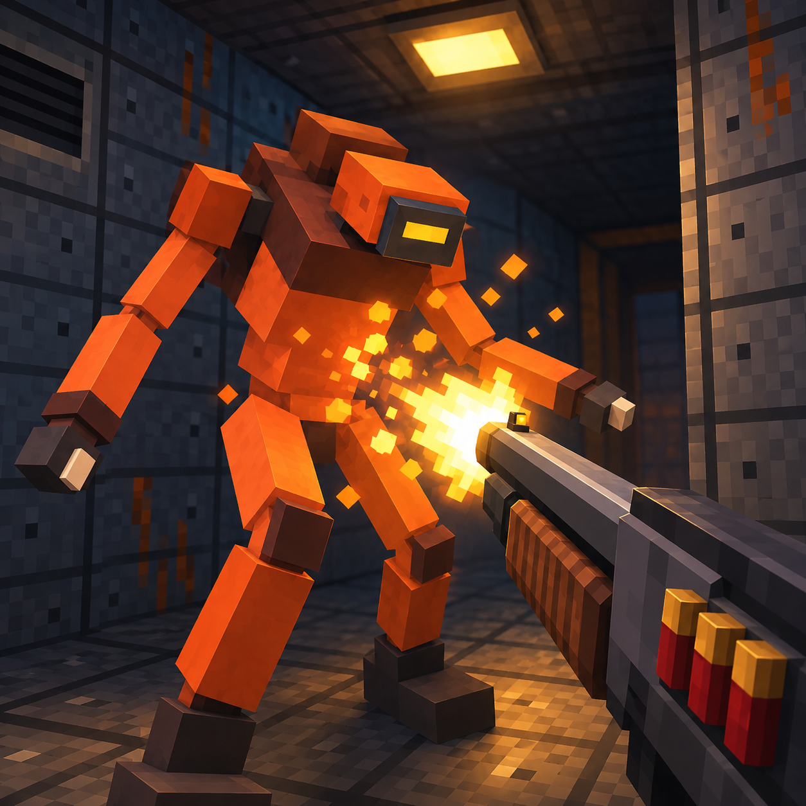
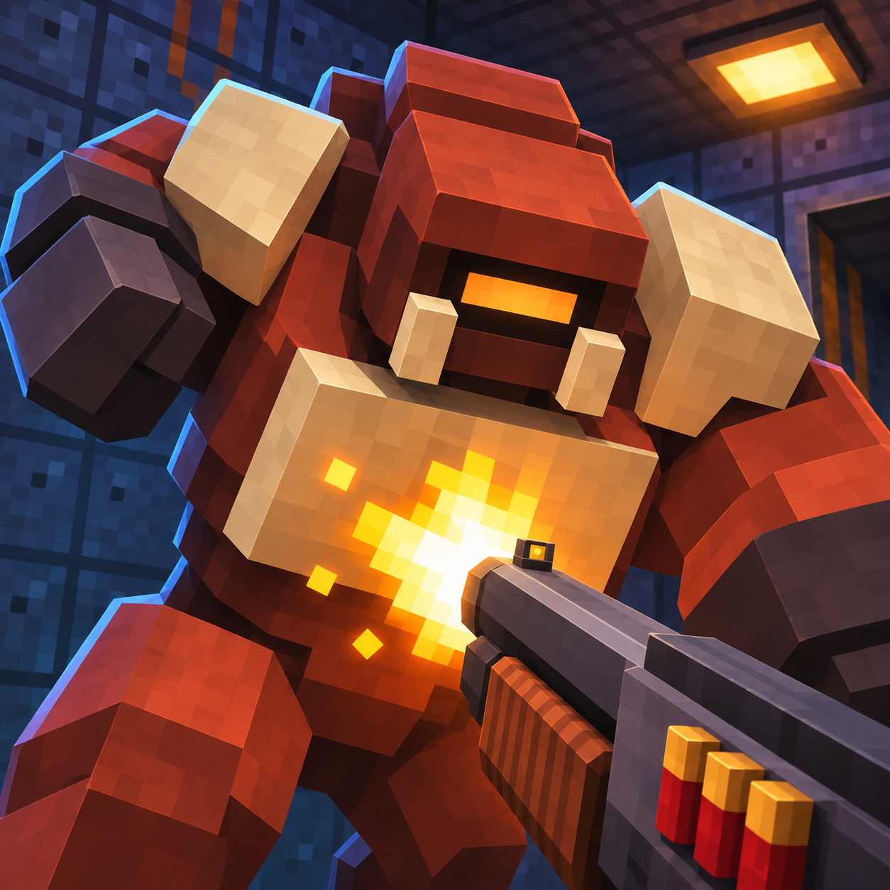
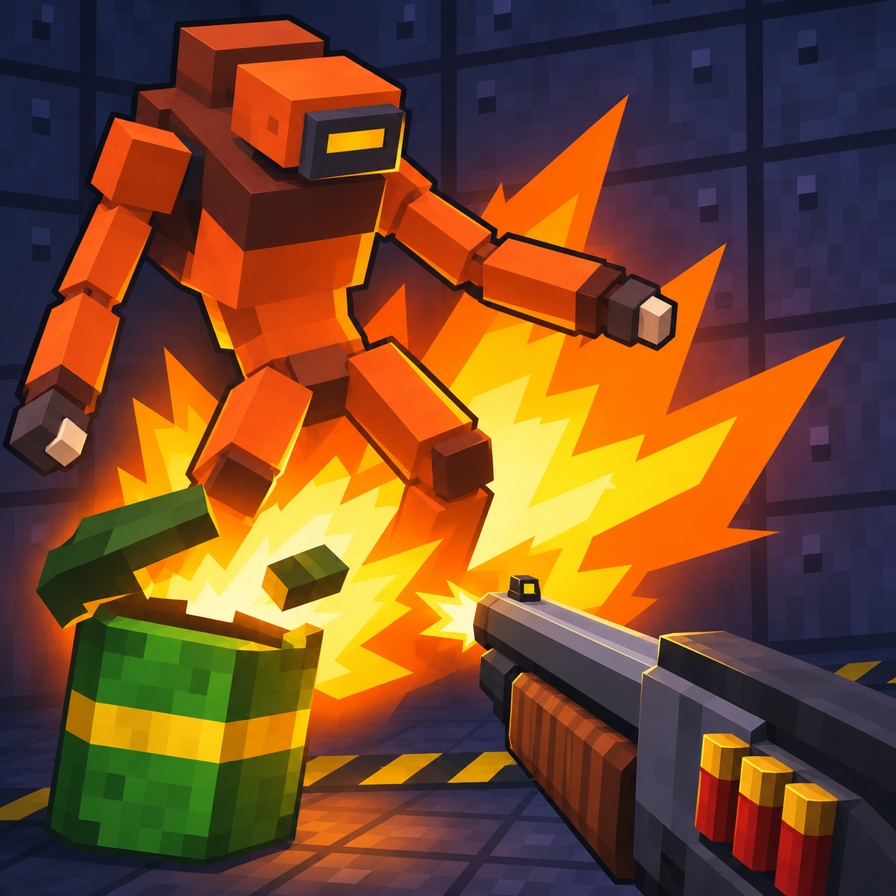

VOXELSTRIKE · thumbnail comparison
Compare the existing image with two new candidates at category-tile sizes. Rounded corners are preview styling only; the PNGs are full-bleed squares. Start testing with the Brute close-up.
Existing · shotgun impact

60 × 60100 × 100
160 × 160

A · Brute close-up

60 × 60100 × 100
160 × 160

B · Barrel payoff

60 × 60100 × 100
160 × 160